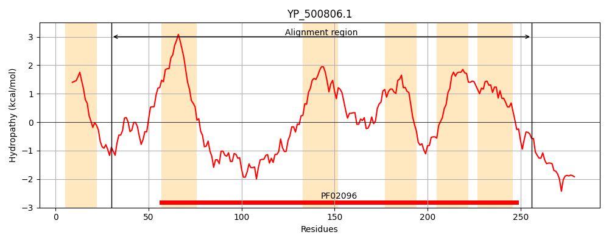
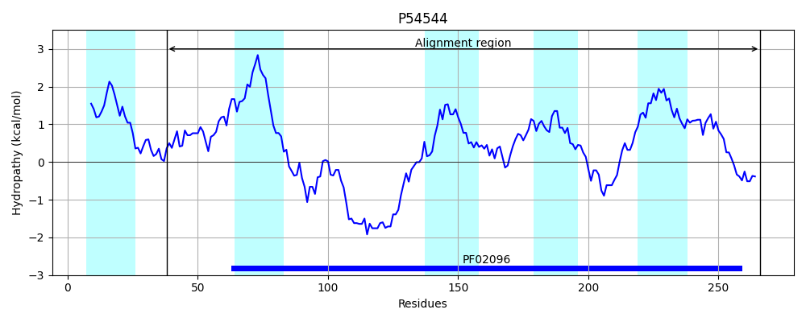
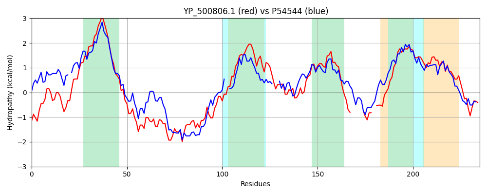

Hit Accession: P54544
Hit TCID: 2.A.9.3.3
Hit Description: gnl|BL_ORD_ID|10946 gnl|TC-DB|P54544|2.A.9.3.3 Membrane protein oxaA 2 OS=Bacillus subtilis GN=oxaA2 PE=3 SV=1
Mach Len: 235
e:0.000000
Query TMS Count : 6
Hit TMS Count: 5
TMS-Overlap Score: 3.950000
Predicted Substrates:CHEBI:8526;protein polypeptide chain
BLAST Alignment:
Score: 400 , Bit scores: 158 bits, E-value: 4.0e-47, Alignment length: 235, Percentage identity: 34
Query: 30 GFFYNTFVDPMKNVLDWLGNNLLNDNYGLAIIILVLVIRIILLPFMLSNYKNSHMMRQKMKVAKPEVEKIQEKVKRARTQEEKMAANQELMQVYKKYDMNPIKSMLGCLPMLIQLPIIMGLYFVLKDQLVDGLFKYPHFLWFDLGRPDIWITIIAGVLYFIQAYVSSK------TMPDE--QRQMGYMMMVISPIMIIWISLSSASALGLYWSVSAAFLVVQTHFANIYYEKVAK 256
GFF++ ++P +L + L + YGL+II++ +++RI++LP ++ +K + ++KM V KP+V+ IQ K+K+ + E++ E+M++Y+++++NP+ +GCLPMLIQ PI++GLY+ ++ FLWF LG+ DI +++ AG++YF+QAY++ K +P +Q +M+ I P+M+ SL+ +AL LYW S FL VQ + + K K
Sbjct: 38 GFFHDYLIEPFSALLKGVAG-LFHGEYGLSIILVTIIVRIVVLPLFVNQFKKQRIFQEKMAVIKPQVDSIQVKLKKTKDPEKQKELQMEMMKLYQEHNINPL--AMGCLPMLIQSPIMIGLYYAIRS---TPEIASHSFLWFSLGQSDILMSLSAGIMYFVQAYIAQKLSAKYSAVPQNPAAQQSAKLMVFIFPVMMTIFSLNVPAALPLYWFTSGLFLTVQNIVLQMTHHKSKK 266 | Protein Hydropathy Plots: |
|---|
|  |  |
Pairwise Alignment-Hydropathy Plot:
|
|---|
|  |